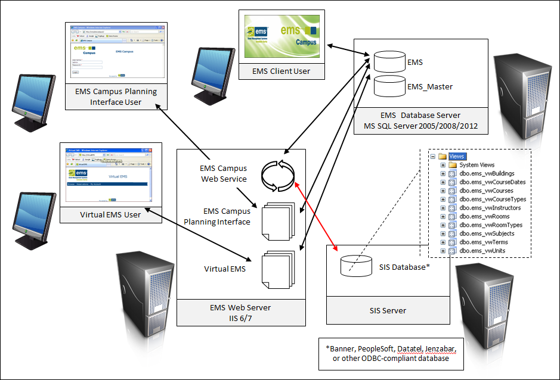

The EMS Campus Web Service communicates with the SIS database via views. An installation script is provided during your implementation that will be executed against your SIS database to create the necessary views. The EMS Campus Web Service interacts directly with these views to handle all querying and updating room assignments.
The EMS Campus Web Service synchronizes the following information from the SIS:
Facility Information
Course Related Information
Note: An extra view – ems_vwCourseDates_IDs is provided for customers using Banner and PeopleSoft for their SIS.
When publishing your course schedule in EMS or when changing room assignments in EMS post-publish, the EMS Campus Web Service updates course room information in your SIS. This is the only information that the EMS Campus Web Service updates in the SIS database.

Synchronization functions are executed by the Domain Scheduler using the EMS Campus client application. After changes are made in the SIS, the EMS Campus Web Service pulls that information into EMS Campus when a sync is ran from the Manage Terms screen.
When the Domain Scheduler publishes a term in EMS, reservations and bookings are created in EMS and updates to course room assignments are pushed back to the SIS. Post-publish changes to course room assignments made in EMS are automatically updated in the SIS.
If creating database views in your SIS is not possible, alternatives are possible: